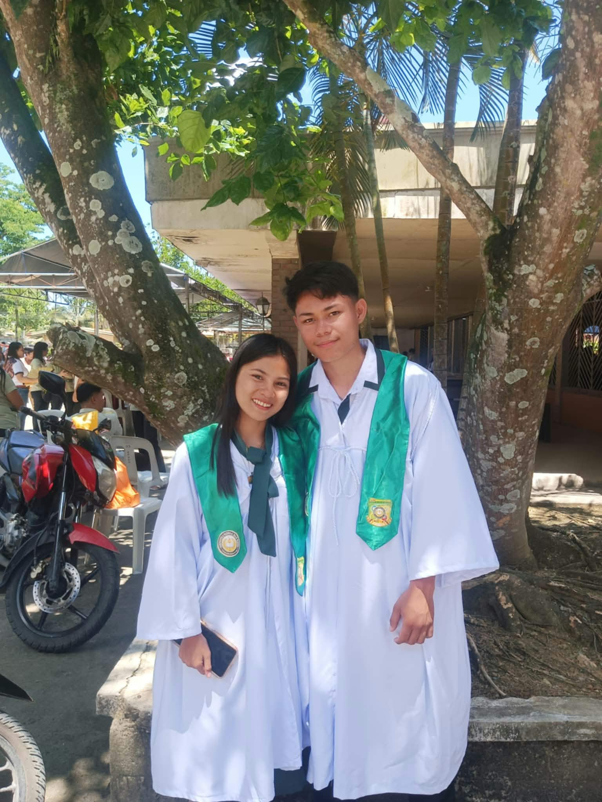
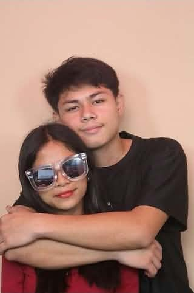
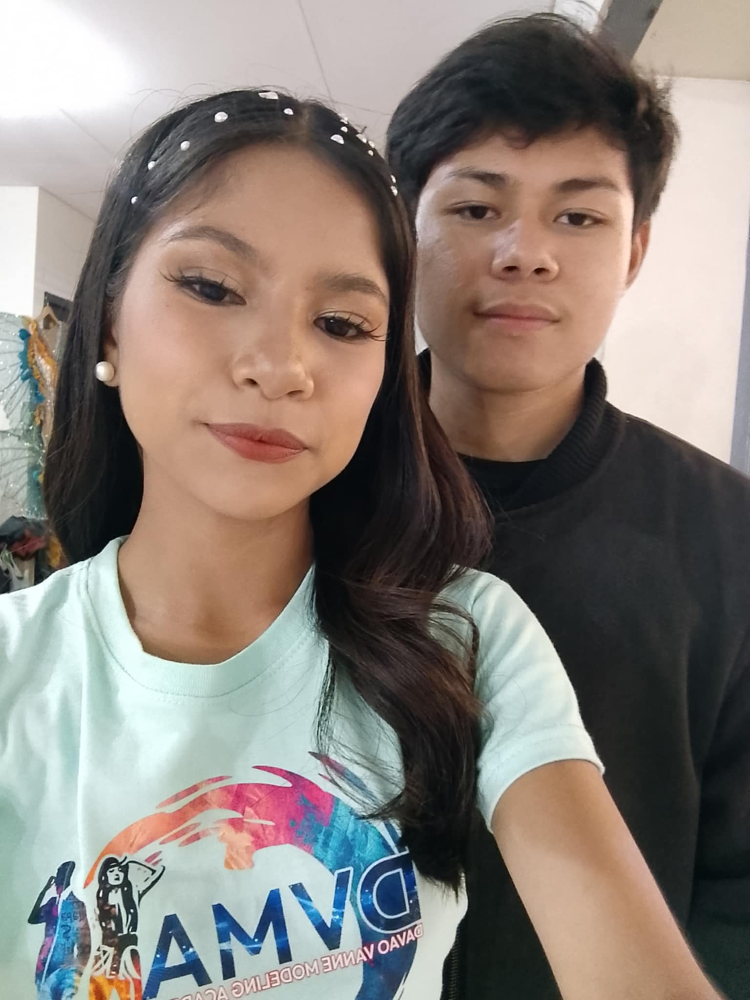
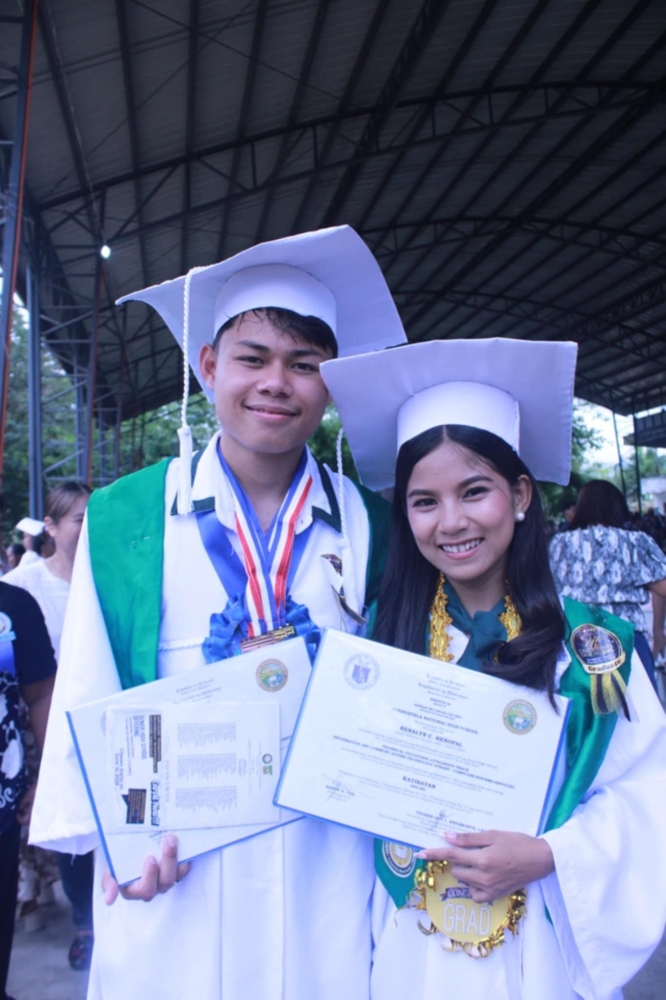
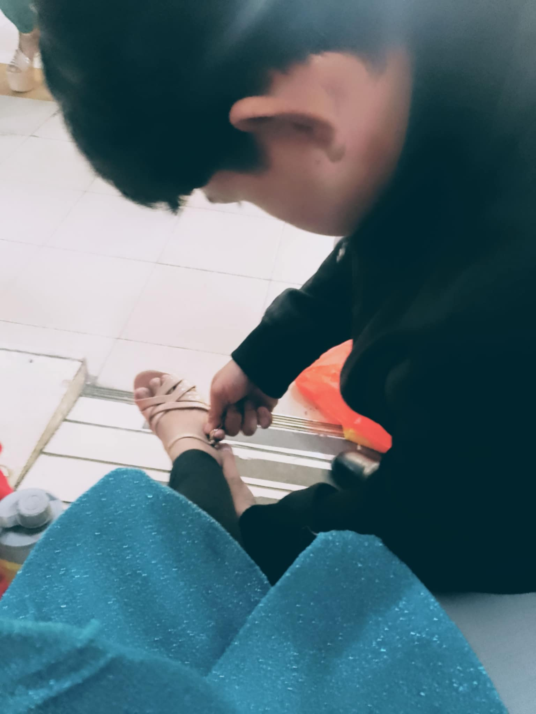
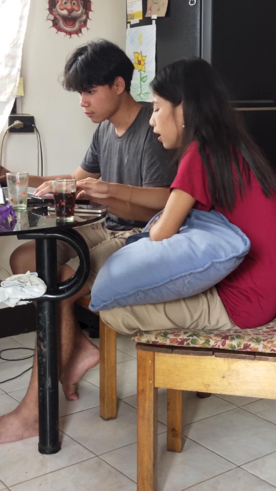
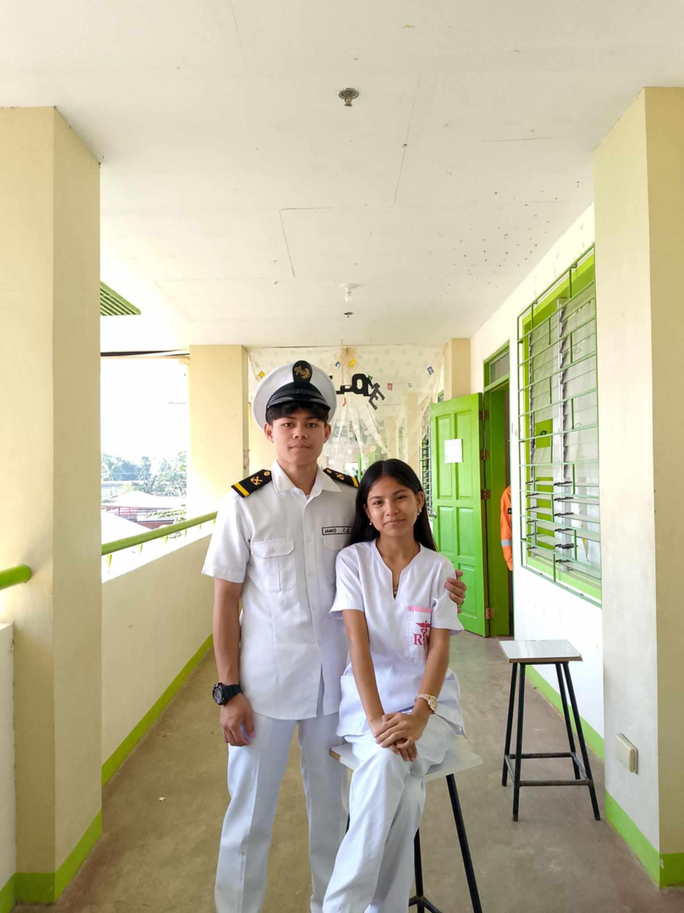
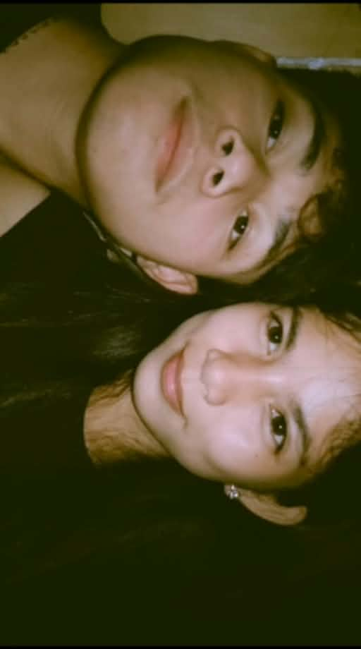
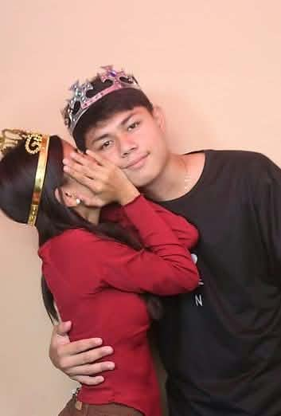
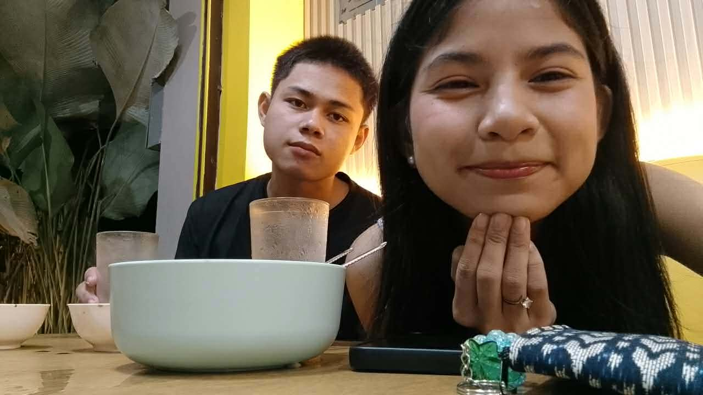

01 / A BEGINNING
Where our story started
Every beautiful story has a first page. I'm glad ours began.
♥ ANOTHER CHAPTER OF US
A small place on the internet for my favorite person and all the moments that mean the most to me.
Take a little walk with me ↓made with love, just for you

months of learning, growing, laughing, missing, and choosing each other.
♡THE LITTLE THINGS I KEEP
Every picture holds a moment I wish I could visit again.






A FEW PAGES IN OUR STORY
Three little snapshots from our journey so far.

Every beautiful story has a first page. I'm glad ours began.

It's the small conversations, shared laughs, and everyday moments that make this ours.

Twenty-one months down. I can't wait for all the pages we haven't written yet.